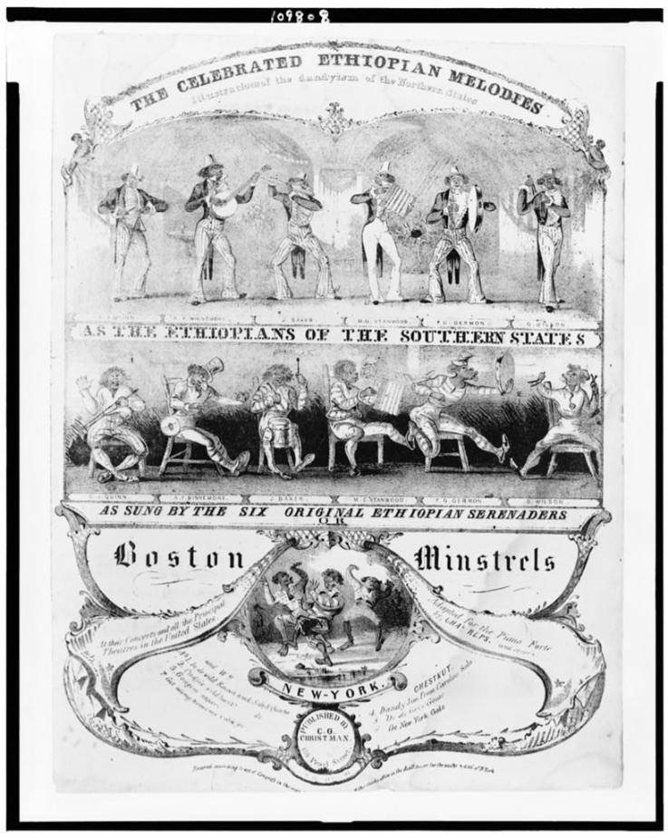

| Field | Detail |
| TOC Fit | Chapter 8 · Essay prompt 8.4 (Did Workers Become a Class?) |
| Why Here | A sheet-music cover sold to white audiences shows a blackface troupe as caricatured plantation musicians and city dandies. Students can read it for what popular entertainment taught working-class white Northerners about race, and ask how such images helped white workers see themselves as a group apart from Black Americans. |
| Treatment | Public-domain image; printed title as recorded in the repository catalog |
Blackface minstrelsy, in which white performers darkened their faces with burnt cork and played exaggerated versions of enslaved and free Black people, became the most popular form of stage entertainment in the North in the 1840s. After the Virginia Minstrels’ success in New York in early 1843, many troupes formed, among them the Boston Minstrels, and music publishers sold their songs as sheet music for home pianos, with lithographed covers advertising the performers. Minstrel audiences were drawn heavily from urban workingmen, including Irish immigrants. The shows mocked Black speech, dress, and ambition, contrasting a supposedly contented plantation “darky” with a ridiculous Northern “dandy.” Historians have argued that this entertainment helped native-born and immigrant workers define themselves as white at a time when wage labor was eroding the independence of artisans. Editorial note. The Norton Online Reader image titled “Boston Minstrels” could not be opened for this reader. This entry uses the Library of Congress lithographed sheet-music cover catalogued as “Boston minstrels. The celebrated Ethiopian melodies . . .” (New York: C. G. Christman), which shows six minstrels in two scenes and is the documented public-domain image matching Norton’s title; it should be checked against the Norton image. The Library of Congress dates the print only to “between 1830 and 1860”; the Boston Minstrels performed in the mid-1840s, so a date in that decade is likely. The full printed title and any song titles on the cover must be transcribed from the image. CAUTION: This is a commercial caricature made to sell music by mocking Black Americans; read it as evidence of white performers’ and audiences’ attitudes, not of Black life. Text transcribed for this reader from the repository image; illegible words are marked [illegible]. |
|
 |
|
UNIT 3 · AN EXPANDING NATION | HISTORY B17A | DANIEL GARZA, M.A.
|